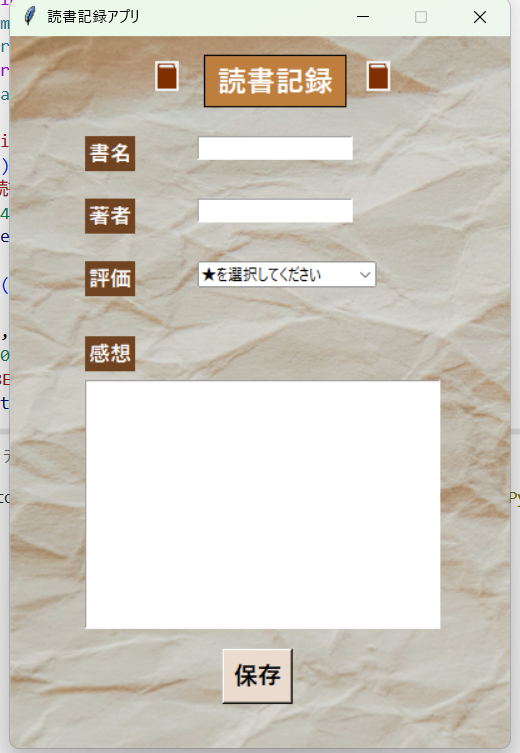

Yuka Kimura
Portfolio
About

木村友香と申します。前職では動物看護師として勤務していました。
退職後はIT分野への転職を目指して職業訓練を受講し、
HTML・CSS・JavaScript・PHP・Python・MySQLなどを学習しました。
現在は学習内容を活かし、WebサイトやWebアプリケーションを制作しています。
未経験ではありますが、前職で培った丁寧さと正確性を活かしながら、
新しい技術を積極的に学び、成長していきたいと考えています。
Skills
Frontend
HTML / CSS / JavaScript / jQuery
Backend
Python / Django / Flask / PHP
Database
MySQL / SQLite
Data / ML
pandas / scikit-learn / Gemini API / Chart.js
License
2024.3 愛玩動物看護師
2026.5 基本情報技術者試験
2026.8 Python 3 エンジニア認定基礎試験
Works

PERSONAL PROJECT 01
MoneyMind 二人で使う家計管理Webアプリ
- Python
- Django
- JavaScript
- SQLite
二人分の家計を、できるだけ手入力を減らして
管理するために自主制作したWebアプリです。
楽天カードや銀行の利用明細をCSVで取り込み、
支出の自動分類や月別集計を行います。
個人・世帯別の収支をグラフで可視化でき、
NISAの評価額もあわせて管理できます。
デモファイルを用意しているので取り込みから集計までお試しいただけます。
詳しくは詳細をご覧ください。
デモアカウント
ID
demo_user1
PW
user_port11
ID
demo_user2
PW
user_port22
※ CSV取り込みを試す場合はこちらのアカウントをご利用ください。
PERSONAL PROJECT 02
Learning English with HarryPotter ハリーポッターシリーズの呪文で英語学習アプリ
- Python
- Flask
- JavaScript
- SQLite
ハリー・ポッターの呪文を題材に、楽しく英語を学習できるWebアプリをFlaskで制作しました。 外部APIから呪文情報を取得し、日本語訳の表示や英単語の抽出、辞書APIによる意味の検索を行っています。 また、学習した呪文の保存・履歴閲覧・Excel形式でのダウンロードにも対応しています。
PERSONAL PROJECT 03
大地の詩 オーガニックブランドを模様したECサイト
- PHP
- JavaScript
- MySQL
自然派スキンケア商品を取り扱うECサイト「大地の詩」を、PHP・MySQLを用いて制作しました。
商品一覧・詳細表示、カテゴリー別検索、カート機能、会員登録・ログイン、注文処理など、オンラインショップに必要な機能を実装しています。
また、管理者向けに商品の登録・編集・販売終了、在庫管理、注文状況の確認・更新、顧客情報の閲覧機能も備えています。
HTML・SCSS・JavaScript（jQuery）を使用し、デザインや操作性にも配慮しました。
デモアカウント
ID
admin
PW
tanuki1234
ID
user
PW
user12345
PERSONAL PROJECT 04
Black poodle 黒いトイプードルをテーマにした参加型Webサイト
- PHP
- JavaScript
- MySQL
黒いトイプードルをテーマにしたWebサイト「Black Poodle」を、PHP・MySQLを用いて制作しました。 犬の紹介や写真ギャラリーに加え、PHPのセッション機能を利用したクイズや、画像を投稿できる掲示板を実装しています。 掲示板では投稿内容の確認画面や、1端末につき1日1回の投稿制限を設けています。 また、RSSを利用した犬関連ニュースの表示にも対応し、情報の閲覧だけでなく、ユーザーが参加して楽しめるサイトを目指しました。

PERSONAL PROJECT 05
読書記録アプリ Python・Tkinterを用いたデスクトップアプリ
- Python
- Tkinter
職業訓練の初期に、PythonのTkinterを用いて読書記録アプリを制作しました。 書名・著者・5段階の評価・感想を入力し、読んだ本の情報を記録できます。 保存した内容は日付付きでテキストファイルに追記され、後から確認することができます。 また、入力漏れを防ぐメッセージ表示にも対応し、GUIの部品配置やイベント処理、ファイルの読み書きなど、Pythonの基礎学習で習得した内容を活用しました。